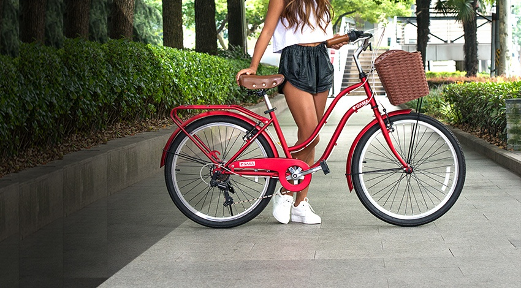

Dia Internacional de la Bicicleta
Foto de perfil
Banner conmemorativo

Banner conmemorativo
En 1816, un alemán solucionó el problema de la dirección y creó una máquina, cuyo nombre era draisiana, con un manillar que permitía el giro de la rueda delantera. A este aparato se le fue introduciendo mejoras con los años, hasta que en 1839 el escocés Kirkpatrick Macmillan añadió unas palancas de conducción y los pedales, lo que permitió que el ciclista no tocara con los pies al suelo. Con esta nueva draisiana, este escocés realizó un viaje de ida y vuelta de 226 km hasta Glasgow. En 1885, fue John Kemp Starley quien creó la llamada bicicleta de seguridad, en la que introdujo la rueda delantera más pequeña, los rodamientos propulsados por una cadena y los frenos. Es decir, inventó la primera bicicleta con muchas similitudes a la bicicleta que hoy en día todos tenemos en la cabeza. A partir de esta nueva bicicleta y de su evolución, se han creado la bicicleta de pista (en la década de los 60) y la de montaña (en la década de los 70). Y, a partir de aquí, se han inventado muchos tipos y modelos de bicicletas, pensados para adaptarse al máximo a las necesidades de todo el mundo.